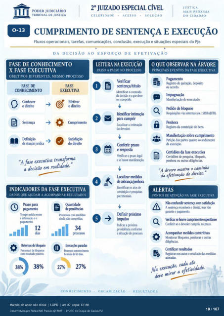

Transcrição automática em português, ainda não revisada. Confira grafia, prazos e termos jurídicos na imagem e no PDF antes de utilizar.
JUST ICA
CUMPRIMENTO DE SENTENÇA E EXECUÇÃO
Fluxos operacionais, tarefas, comunicações. conclusão, execução e situações especiais do PJe.
DA DECISÃO AO ESFORÇO DE EFETIVAÇÃO
FASE DE CONHECIMENTO
X FASE EXECUTIVA
OBJETIVOS DIFERENTES, MESMO PROCESSO
FASE DE
CONHECIMENTO
o direito Ikfinição
FASE
EXECUTIVA
o direito "A fase executiva transforma
a decisão em
INDICADORES DA FASE EXECUTIVA
DADOS QUE AJUDAM A ACOMPANHAR RESULTADOS
Terr•m entre a intimaçü) e o
12 &rcentual
Com resuhuh
LEITURA NA EXECUÇÃO
PASSO A PASSO NO PROCESSO
Verificar sentença/título
Identificar 0 contdo da &cisào e o
ser cumpri'h Identificar intim$
para cumprir L«alizar a intimaçü)
do devor. Conferir prazo
e respsta Verificar o prazo legal
e Inne manifestaçàa Uralizar
de cobrança/Fnhora l<ificar os atos de
constrição e Fsquisas Definir próximo
Indicar a Fóxima providência cmforme
a situ40 processo. rmiéncias
Prtxessm com nxlidas ainda cumpriias
34 prós
rrmi•rto mais
27%
CONHECIMENTO
O QUE OBSERVAR NA ÁRVORE
PRINCIPAIS EVENTOS DA FASE EXECUTIVA
Registro de qtút$), dqxisito ou acord(l
do executacb. via sistemas (ex.: SISBAJUD).
Registro da ctytstriçào de Erns Manifestação sobre cumprimento
Petição das prtes quanto andamento da execgào.
Certi&s da fase executiva Certid(ks Fsquisa, bkxveio,
Fnhora ou (Nitras diligências. "A árvore mostra o caminho
da efetivação do direito. "
ALERTAS
PONTOS DE ATENÇÃO NA FASE EXECUTIVA
Não confundir satisfação A reconhece 0 mas não
garante 0 pagamento. cumprimento
Conkrir o doe" cumpriu no prazo. Acornpanhar medidas constritivas
Monitorar bkqueios. pnhoras e outras Certificar resultados
Registrar rus autos o resultado das cada ato
Na execuçao'a efetividade. deve
ORGANIZAÇÃO
RESULTADOS
Ver também o infográfico original (página 18)
